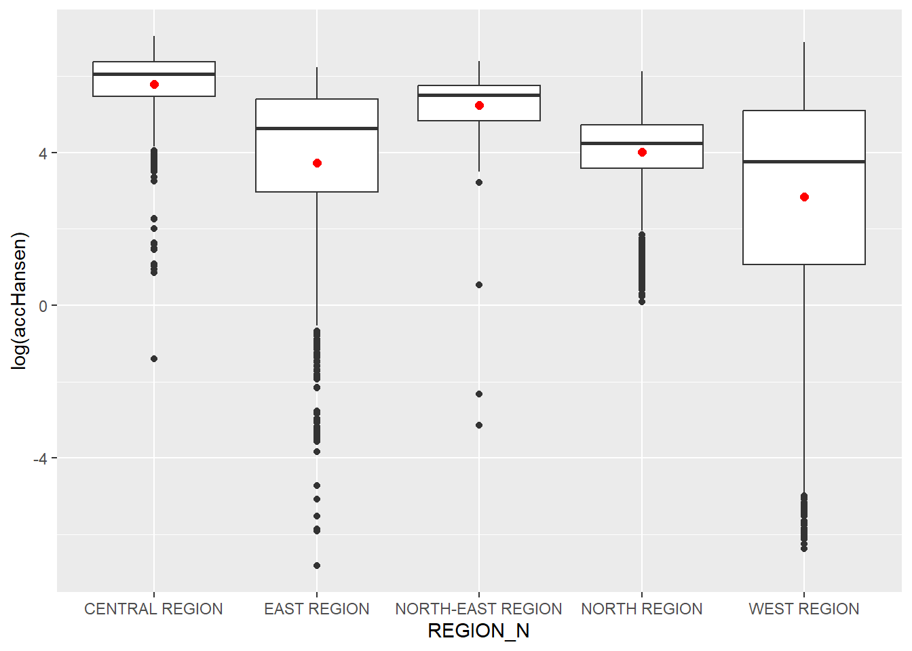

Show the code
detach("package:spflow", unload = TRUE)
devtools::install_github("LukeCe/spflow") # to get latest versionFour data sets will be used in this hands-on exercise, they are:
MP14_SUBZONE_NO_SEA_PL: URA Master Plan 2014 subzone boundary GIS data. This data set is downloaded from data.gov.sg.
hexagons: A 250m radius hexagons GIS data. This data set was created by using st_make_grid() of sf package. It is in ESRI shapefile format.
ELDERCARE: GIS data showing location of eldercare service. This data is downloaded from data.gov.sg. There are two versions. One in ESRI shapefile format. The other one in Google kml file format. For the purpose of this hands-on exercise, ESRI shapefile format is provided.
OD_Matrix: a distance matrix in csv format. There are six fields in the data file. They are:
origin_id: the unique id values of the origin (i.e. fid of hexagon data set.),
destination_id: the unique id values of the destination (i.e. fid of ELDERCARE data set.),
entry_cost: the perpendicular distance between the origins and the nearest road),
network_cost: the actual network distance from the origin and destination,
exit_cost: the perpendicular distance between the destination and the nearest road), and
total_cost: the summation of entry_cost, network_cost and exit_cost.
All the values of the cost related fields are in metres.
The code chunk below installs and launches these R packages into RStudio environment.
detach("package:spflow", unload = TRUE)
devtools::install_github("LukeCe/spflow") # to get latest versionpacman::p_load(tmap, sf, spdep, sp, Matrix, spflow, reshape2, knitr, tidyverse)mpsz_nb <- read_rds("data/rds/mpsz_nb.rds")
mpsz_flow <- read_rds("data/rds/mpsz_flow.rds")
mpsz_var <- read_rds("data/rds/mpsz_var.rds")# Importing the 2014 subzone no sea
mpsz <- st_read(dsn = "data/geospatial", layer = "MP14_SUBZONE_NO_SEA_PL")Reading layer `MP14_SUBZONE_NO_SEA_PL' from data source
`D:\KrisLBT\IS415-GAA\In-class_Ex\In-class_Ex11\data\geospatial'
using driver `ESRI Shapefile'
Simple feature collection with 323 features and 15 fields
Geometry type: MULTIPOLYGON
Dimension: XY
Bounding box: xmin: 2667.538 ymin: 15748.72 xmax: 56396.44 ymax: 50256.33
Projected CRS: SVY21# Importing hexagons
hexagons <- st_read(dsn = "data/geospatial", layer = "hexagons") Reading layer `hexagons' from data source
`D:\KrisLBT\IS415-GAA\In-class_Ex\In-class_Ex11\data\geospatial'
using driver `ESRI Shapefile'
Simple feature collection with 3125 features and 6 fields
Geometry type: POLYGON
Dimension: XY
Bounding box: xmin: 2667.538 ymin: 21506.33 xmax: 50010.26 ymax: 50256.33
Projected CRS: SVY21 / Singapore TM# Importing eldercare
eldercare <- st_read(dsn = "data/geospatial", layer = "ELDERCARE") Reading layer `ELDERCARE' from data source
`D:\KrisLBT\IS415-GAA\In-class_Ex\In-class_Ex11\data\geospatial'
using driver `ESRI Shapefile'
Simple feature collection with 120 features and 19 fields
Geometry type: POINT
Dimension: XY
Bounding box: xmin: 14481.92 ymin: 28218.43 xmax: 41665.14 ymax: 46804.9
Projected CRS: SVY21 / Singapore TMThe code chunk below updates the newly imported mpsz with the correct ESPG code (i.e. 3414)
mpsz <- st_transform(mpsz, 3414)
eldercare <- st_transform(eldercare, 3414)
hexagons <- st_transform(hexagons, 3414)I can now check the crs of mpsz using the st_crs() function of the sf package.
st_crs(mpsz)Coordinate Reference System:
User input: EPSG:3414
wkt:
PROJCRS["SVY21 / Singapore TM",
BASEGEOGCRS["SVY21",
DATUM["SVY21",
ELLIPSOID["WGS 84",6378137,298.257223563,
LENGTHUNIT["metre",1]]],
PRIMEM["Greenwich",0,
ANGLEUNIT["degree",0.0174532925199433]],
ID["EPSG",4757]],
CONVERSION["Singapore Transverse Mercator",
METHOD["Transverse Mercator",
ID["EPSG",9807]],
PARAMETER["Latitude of natural origin",1.36666666666667,
ANGLEUNIT["degree",0.0174532925199433],
ID["EPSG",8801]],
PARAMETER["Longitude of natural origin",103.833333333333,
ANGLEUNIT["degree",0.0174532925199433],
ID["EPSG",8802]],
PARAMETER["Scale factor at natural origin",1,
SCALEUNIT["unity",1],
ID["EPSG",8805]],
PARAMETER["False easting",28001.642,
LENGTHUNIT["metre",1],
ID["EPSG",8806]],
PARAMETER["False northing",38744.572,
LENGTHUNIT["metre",1],
ID["EPSG",8807]]],
CS[Cartesian,2],
AXIS["northing (N)",north,
ORDER[1],
LENGTHUNIT["metre",1]],
AXIS["easting (E)",east,
ORDER[2],
LENGTHUNIT["metre",1]],
USAGE[
SCOPE["Cadastre, engineering survey, topographic mapping."],
AREA["Singapore - onshore and offshore."],
BBOX[1.13,103.59,1.47,104.07]],
ID["EPSG",3414]]There are many redundant fields in the data tables of both eldercare and hexagons. The code chunks below will be used to exclude those redundant fields. At the same time, a new field called demand and a new field called capacity will be added into the data table of hexagons and eldercare sf data frame respectively. Both fields are derived using mutate() of dplyr package.
eldercare <- eldercare %>%
select(fid, ADDRESSPOS) %>%
mutate(capacity = 100)
hexagons <- hexagons %>%
select(fid) %>%
mutate(demand = 100)The code chunk below uses read_cvs() of readr package to import OD_Matrix.csv into RStudio. The imported object is a tibble data.frame called ODMatrix.
ODMatrix <- read_csv("data/aspatial/OD_Matrix.csv", skip = 0)The code chunk below uses pivot_wider() of tidyr package is used to transform the O-D matrix from a thin format into a fat format.
distmat <- ODMatrix %>%
select(origin_id, destination_id, total_cost) %>%
pivot_wider(names_from= destination_id, values_from =total_cost)%>%
select(-origin_id)You may now use the pivot_wider() function from the tidyr package
Currently, the distance is measured in metre because SVY21 projected coordinate system is used. The code chunk below will be used to convert the unit f measurement from metre to kilometre.
distmat_km <- as.matrix(distmat/1000)The code chunk below calculates Hansen’s accessibility using ac() of SpatialAcc and data.frame() is used to save the output in a data frame called acc_Handsen.
acc_Hansen <- data.frame(SpatialAcc::ac(hexagons$demand,
eldercare$capacity,
distmat_km,
#d0 = 50,
power = 2,
family = "Hansen"))The default field name is very messy, we will rename it to accHansen by using the code chunk below.
colnames(acc_Hansen) <- "accHansen"Next, we will convert the data table into tibble format by using the code chunk below.
acc_Hansen <- as_tibble(acc_Hansen)Lastly, bind_cols() of dplyr will be used to join the acc_Hansen tibble data frame with the hexagons simple feature data frame. The output is called hexagon_Hansen.
hexagon_Hansen <- bind_cols(hexagons, acc_Hansen)Actually, the steps above can be perform by using a single code chunk as shown below.
acc_Hansen <- data.frame(SpatialAcc::ac(hexagons$demand,
eldercare$capacity,
distmat_km,
#d0 = 50,
power = 0.5,
family = "Hansen"))
colnames(acc_Hansen) <- "accHansen"
acc_Hansen <- as_tibble(acc_Hansen)
hexagon_Hansen <- bind_cols(hexagons, acc_Hansen)Firstly, we will extract the extend of hexagons simple feature data frame by by using st_bbox() of sf package.
mapex <- st_bbox(hexagons)The code chunk below uses a collection of mapping fucntions of tmap package to create a high cartographic quality accessibility to eldercare centre in Singapore.
tmap_mode("plot")
tm_shape(hexagon_Hansen,
bbox = mapex) +
tm_fill(col = "accHansen",
n = 10,
style = "quantile",
border.col = "black",
border.lwd = 1) +
tm_shape(eldercare) +
tm_symbols(size = 0.1) +
tm_layout(main.title = "Accessibility to eldercare: Hansen method",
main.title.position = "center",
main.title.size = 2,
legend.outside = FALSE,
legend.height = 0.45,
legend.width = 3.0,
legend.format = list(digits = 6),
legend.position = c("right", "top"),
frame = TRUE) +
tm_compass(type="8star", size = 2) +
tm_scale_bar(width = 0.15) +
tm_grid(lwd = 0.1, alpha = 0.5)
In this section, we are going to compare the distribution of Hansen’s accessibility values by URA Planning Region.
Firstly, we need to add the planning region field into haxegon_Hansen simple feature data frame by using the code chunk below.
hexagon_Hansen <- st_join(hexagon_Hansen, mpsz,
join = st_intersects)Next, ggplot() will be used to plot the distribution by using boxplot graphical method.
ggplot(data=hexagon_Hansen,
aes(y = log(accHansen),
x= REGION_N)) +
geom_boxplot() +
geom_point(stat="summary",
fun.y="mean",
colour ="red",
size=2)
In this section, you are going to repeat most of the steps you had learned in previous section to perform the analysis. However, some of the codes will be combined into one code chunk. The code chunk below calculates Hansen’s accessibility using ac() of SpatialAcc and data.frame() is used to save the output in a data frame called acc_KD2SFCA. Notice that KD2SFCA is used for family argument.
acc_KD2SFCA <- data.frame(SpatialAcc::ac(hexagons$demand,
eldercare$capacity,
distmat_km,
d0 = 50,
power = 2,
family = "KD2SFCA"))
colnames(acc_KD2SFCA) <- "accKD2SFCA"
acc_KD2SFCA <- as_tibble(acc_KD2SFCA)
hexagon_KD2SFCA <- bind_cols(hexagons, acc_KD2SFCA)The code chunk below uses a collection of mapping fucntions of tmap package to create a high cartographic quality accessibility to eldercare centre in Singapore. Notice that mapex is reused for bbox argument.
tmap_mode("plot")
tm_shape(hexagon_KD2SFCA,
bbox = mapex) +
tm_fill(col = "accKD2SFCA",
n = 10,
style = "quantile",
border.col = "black",
border.lwd = 1) +
tm_shape(eldercare) +
tm_symbols(size = 0.1) +
tm_layout(main.title = "Accessibility to eldercare: KD2SFCA method",
main.title.position = "center",
main.title.size = 2,
legend.outside = FALSE,
legend.height = 0.45,
legend.width = 3.0,
legend.format = list(digits = 6),
legend.position = c("right", "top"),
frame = TRUE) +
tm_compass(type="8star", size = 2) +
tm_scale_bar(width = 0.15) +
tm_grid(lwd = 0.1, alpha = 0.5)
Now, we are going to compare the distribution of KD2CFA accessibility values by URA Planning Region.
Firstly, we need to add the planning region field into hexagon_KD2SFCA simple feature data frame by using the code chunk below.
hexagon_KD2SFCA <- st_join(hexagon_KD2SFCA, mpsz,
join = st_intersects)Next, ggplot() will be used to plot the distribution by using boxplot graphical method.
ggplot(data=hexagon_KD2SFCA,
aes(y = accKD2SFCA,
x= REGION_N)) +
geom_boxplot() +
geom_point(stat="summary",
fun.y="mean",
colour ="red",
size=2)
In this section, you are going to repeat most of the steps you had learned in previous section to perform the analysis. However, some of the codes will be combined into one code chunk.
The code chunk below calculates Hansen’s accessibility using ac() of SpatialAcc and data.frame() is used to save the output in a data frame called acc_SAM. Notice that SAM is used for family argument.
acc_SAM <- data.frame(SpatialAcc::ac(hexagons$demand,
eldercare$capacity,
distmat_km,
d0 = 50,
power = 2,
family = "SAM"))
colnames(acc_SAM) <- "accSAM"
acc_SAM <- as_tibble(acc_SAM)
hexagon_SAM <- bind_cols(hexagons, acc_SAM)The code chunk below uses a collection of mapping fucntions of tmap package to create a high cartographic quality accessibility to eldercare centre in Singapore. Notice that mapex is reused for bbox argument.
tmap_mode("plot")
tm_shape(hexagon_SAM,
bbox = mapex) +
tm_fill(col = "accSAM",
n = 10,
style = "quantile",
border.col = "black",
border.lwd = 1) +
tm_shape(eldercare) +
tm_symbols(size = 0.1) +
tm_layout(main.title = "Accessibility to eldercare: SAM method",
main.title.position = "center",
main.title.size = 2,
legend.outside = FALSE,
legend.height = 0.45,
legend.width = 3.0,
legend.format = list(digits = 3),
legend.position = c("right", "top"),
frame = TRUE) +
tm_compass(type="8star", size = 2) +
tm_scale_bar(width = 0.15) +
tm_grid(lwd = 0.1, alpha = 0.5)
Now, we are going to compare the distribution of SAM accessibility values by URA Planning Region.
Firstly, we need to add the planning region field into hexagon_SAM simple feature data frame by using the code chunk below.
hexagon_SAM <- st_join(hexagon_SAM, mpsz,
join = st_intersects)Next, ggplot() will be used to plot the distribution by using boxplot graphical method.
ggplot(data=hexagon_SAM,
aes(y = accSAM,
x= REGION_N)) +
geom_boxplot() +
geom_point(stat="summary",
fun.y="mean",
colour ="red",
size=2)
mpsz_net <- spflow_network(
id_net = "sg",
node_neighborhood = nb2mat(mpsz_nb$by_contiguity),
node_data = mpsz_var,
node_key_column = "SZ_CODE"
)
mpsz_netSpatial network nodes with id: sg
--------------------------------------------------
Number of nodes: 313
Average number of links per node: 6.077
Density of the neighborhood matrix: 1.94% (non-zero connections)
Data on nodes:
SZ_NAME SZ_CODE BUSSTOP_COUNT AGE7_12 AGE13_24 AGE25_64
1 INSTITUTION HILL RVSZ05 2 330 360 2260
2 ROBERTSON QUAY SRSZ01 10 320 350 2200
3 FORT CANNING MUSZ02 6 0 10 30
4 MARINA EAST (MP) MPSZ05 2 0 0 0
5 SENTOSA SISZ01 1 200 260 1440
6 CITY TERMINALS BMSZ17 10 0 0 0
--- --- --- --- --- --- ---
308 NEE SOON YSSZ07 12 90 140 590
309 UPPER THOMSON BSSZ01 47 1590 3660 15980
310 SHANGRI-LA AMSZ05 12 810 1920 9650
311 TOWNSVILLE AMSZ04 9 980 2000 11320
312 MARYMOUNT BSSZ02 25 1610 4060 16860
313 TUAS VIEW EXTENSION TSSZ06 11 0 0 0
SCHOOL_COUNT BUSINESS_COUNT RETAILS_COUNT FINSERV_COUNT ENTERTN_COUNT
1 1 6 26 3 0
2 0 4 207 18 6
3 0 7 17 0 3
4 0 0 0 0 0
5 0 1 84 29 2
6 0 11 14 4 0
--- --- --- --- --- ---
308 0 0 7 0 0
309 3 21 305 30 0
310 3 0 53 9 0
311 1 0 83 11 0
312 3 19 135 8 0
313 0 53 3 1 0
FB_COUNT LR_COUNT COORD_X COORD_Y
1 4 3 103.84 1.29
2 38 11 103.84 1.29
3 4 7 103.85 1.29
4 0 0 103.88 1.29
5 38 20 103.83 1.25
6 15 0 103.85 1.26
--- --- --- --- ---
308 0 0 103.81 1.4
309 5 11 103.83 1.36
310 0 0 103.84 1.37
311 1 1 103.85 1.36
312 3 11 103.84 1.35
313 0 0 103.61 1.26mpsz_multi_net <- spflow_network_multi(mpsz_net,
mpsz_net_pairs)